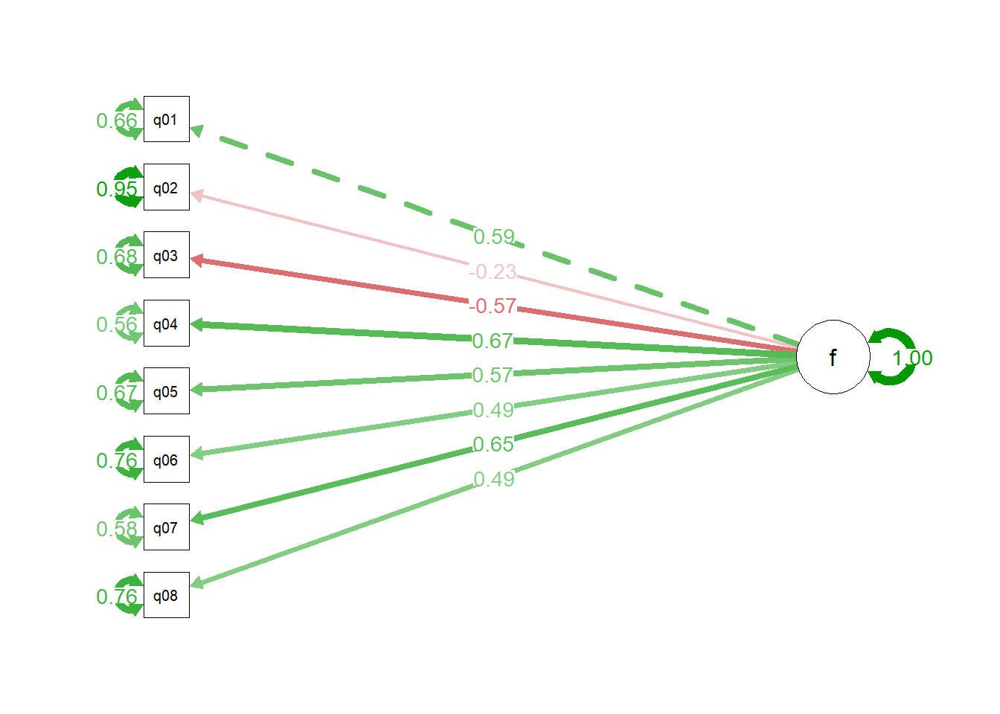

A Análise Fatorial Confirmatória (CFA) é uma técnica estatística usada para testar se um modelo teórico de fatores, realmente se ajusta aos dados coletados. Ela verifica se as variáveis observadas(e.g. indicadores de qualidade, tempo de produção, etc.) estão agrupadas conforme os fatores que você acredita que existem.
Imagine uma fábrica de veículos onde você está tentando entender por que alguns carros saem com defeitos. Você já tem uma hipótese (e.g que os defeitos são causados por matéria-prima, operador e ambiente), e quer confirmar se esses fatores realmente explicam os dados. Você testa se os dados de produção realmente se agrupam nesses 3 fatores que você identificou antes. Se o modelo se ajustar bem, você pode confiar nessa estrutura para tomar decisões. O CFA é usada quando já se tem uma ideia clara dos fatores, e ela serve para validar modelos teóricos, e é mais rigorosa que a análise exploratória de fatores EFA .
Qual o objetivo ?
O objetivo da CFA é confirmar uma estrutura de fatores previamente definida. Diferente da análise exploratória (EFA), que busca descobrir padrões, a CFA valida hipóteses sobre como os dados devem se comportar.
De onde vem ?
A CFA surgiu da necessidade de testar modelos teóricos em diversas áreas, como psicologia, educação e engenharia. Em ambientes industriais, como fábricas de veículos, ela é útil para validar modelos de desempenho, qualidade ou eficiência que foram propostos com base na experiência ou em estudos anteriores (e.g se engenheiros acreditam que a eficiência da produção depende de três fatores — treinamento dos operadores, qualidade das peças e condições da linha de montagem — a CFA pode testar se os dados realmente refletem essa estrutura).
Como fazer ?
Exemplo1 Modelo UCLA
Como exemplo usaremos os dados de questionário de ansiedade SPSS(SAQ) de Field (2025) apresentado no seminário pelo professor Johnny Lin da Universidade da Califórnia UCLA Office of Advanced Research Computing (2021) e usamos o pacote lavaanRosseel (2024)
Neste exemplo o pesquisador quer avaliar as propriedades psicométricas do questionário que possui 8 questões.
Questões
1 Estatísticas me fazem chorar
5 Eu não entendo de estatística
2 Meus amigos vão pensar que sou estúpido por não conseguir lidar com o SPSS
6 Tenho pouca experiência com computadores
3 Desvios padrão me excitam
7 Todos os computadores me odeiam
4 Eu sonho que Pearson está me atacando com coeficientes de correlação
# show resultsbroom::glance(mdl_fit_m1) %>% gt::gt()
agfi
AIC
BIC
cfi
chisq
npar
rmsea
rmsea.conf.high
srmr
tli
converged
estimator
ngroups
missing_method
nobs
norig
nexcluded
0.9052278
53291.12
53384.75
0.8708615
554.1906
16
0.1019253
0.1093351
0.05549031
0.8192061
TRUE
ML
1
listwise
2571
2571
0
Mostrando o diagrama usando o pacote o pacote semPlotEpskamp (2025)
# plot the results# for one standard deviation increased in factor number 5, goes up by 0.574 in the deviation meanssemPaths(mdl_fit_m1, rotation =4,"std",edge.label.cex =1 )

Modelo2: Exemplo prático na fábrica de veículos
Imagine que você tem os seguintes dados de produção: Tempo de montagem , Número de retrabalhos , Índice de satisfação do operador , Temperatura da linha e Qualidade da peça recebida
Você acredita que esses dados se agrupam em dois fatores:
Fator Operacional: tempo de montagem, retrabalho, satisfação do operador.
Fator Material: temperatura da linha, qualidade da peça.
Com a CFA, você monta um modelo que liga cada variável ao fator correspondente e testa se essa estrutura realmente se ajusta aos dados. Se o modelo for validado, você pode confiar nessa divisão para análises futuras.
library(tidyverse)# step1: gerar dadosset.seed(123)dados_mfg <-tibble(tempo_montagem =rnorm(100, mean =30, sd =5),retrabalho =rnorm(100, mean =2, sd =1),satisfacao_operador =rnorm(100, mean =7, sd =1.5),temperatura_linha =rnorm(100, mean =22, sd =2),qualidade_peca =rnorm(100, mean =8, sd =1) )# step2: especificar modelomdl_spec_cfa_mfg <-' # Fator Operacional operacional =~ tempo_montagem + retrabalho + satisfacao_operador # Fator Material material =~ temperatura_linha + qualidade_peca '# step3: rodar modelomdl_fit_cfa_mfg <-cfa(mdl_spec_cfa_mfg, data = dados_mfg)# step4: show resultsbroom::tidy(mdl_fit_m1) %>%filter(op =="=~") %>% gt::gt()
term
op
estimate
std.error
statistic
p.value
std.lv
std.all
f =~ q01
=~
1.0000000
0.00000000
NA
NA
0.4852528
0.5861524
f =~ q02
=~
-0.4084397
0.04019005
-10.16271
0
-0.1981965
-0.2329220
f =~ q03
=~
-1.2620027
0.05816373
-21.69742
0
-0.6123904
-0.5697710
f =~ q04
=~
1.3031817
0.05428665
24.00557
0
0.6323726
0.6668037
f =~ q05
=~
1.1417647
0.05232496
21.82065
0
0.5540445
0.5744352
f =~ q06
=~
1.1422693
0.05843729
19.54692
0
0.5542894
0.4941144
f =~ q07
=~
1.4758700
0.06242123
23.64372
0
0.7161700
0.6497960
f =~ q08
=~
0.8734223
0.04526810
19.29443
0
0.4238306
0.4858209
# step4: show resultsbroom::glance(mdl_fit_m1) %>% gt::gt()
agfi
AIC
BIC
cfi
chisq
npar
rmsea
rmsea.conf.high
srmr
tli
converged
estimator
ngroups
missing_method
nobs
norig
nexcluded
0.9052278
53291.12
53384.75
0.8708615
554.1906
16
0.1019253
0.1093351
0.05549031
0.8192061
TRUE
ML
1
listwise
2571
2571
0
Pra onde vai ?
Depois de validar o modelo com CFA, ele pode ser usado para monitorar a produção com base nos fatores confirmados, criar indicadores compostos (ex: índice de eficiência operacional), apoiar decisões gerenciais, como onde investir em treinamento ou melhorias, e ou integrar com SEM (Modelagem de Equações Estruturais) para entender relações causais entre fatores.
Qual o resultado ?
Confirmação estatística de que os fatores teóricos fazem sentido.
Redução da complexidade dos dados, agrupando variáveis em fatores significativos.
Maior confiança nas decisões baseadas em dados.
Base sólida para modelos preditivos e análises futuras.
Iannone, Richard, Joe Cheng, Barret Schloerke, Ellis Hughes, Alexandra Lauer, JooYoung Seo, Brevoort Ken, and Roy Olivier. 2025. Gt: Easily Create Presentation-Ready Display Tables. https://github.com/rstudio/gt.